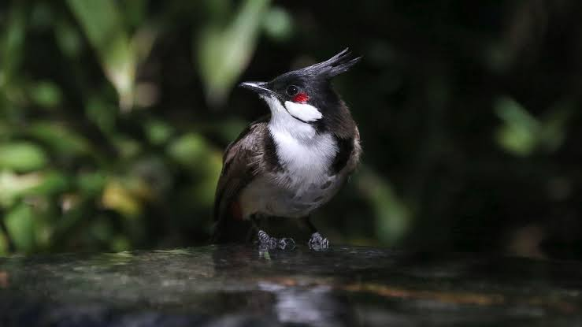

Bulbul
Birds
The bulbuls are a family, Pycnonotidae, of medium-sized passerine songbirds. Many forest species are known as greenbuls, brownbuls, leafloves, or bristlebills. The family is distributed across most of Africa and into the Middle East, tropical Asia to Indonesia, and north as far as Japan.
Scientific name: Pycnonotidae
Kingdom: Animalia
Class: Aves
Family: Pycnonotidae; Gray, GR, 1840
Higher classification: Passerine
Mass: Red-whiskered bulbul: 28 g, Red-vented bulbul: 43 g,
Bulbul, any of about 140 species of birds of the family Pycnonotidae (order Passeriformes) of Africa and Asia, including some called greenbuls and brownbuls.
Members range in size from 14 to 28 cm (5.5 to 11 inches) long. They are active, noisy, plain-coloured birds that sometimes damage orchards.
Representative of the 47 species of the genus Pycnonotus is the African bulbul (P. barbatus, including P. xanthopygos and P. tricolor), an 18-cm (7-inch) brownish gray bird.
Others are the red-whiskered bulbul (P. jocosus, sometimes Otocompsa jocosa), which is indigenous from India to southern China, and the red-vented bulbul (P., sometimes Molpastes, cafer) of Pakistan to Java (natively) and the Fiji islands (by introduction).
The 22 species of Phyllastrephus are common in tropical Africa. Finch-billed bulbuls (Spizixos) occur in southeastern Asia. The white-throated bulbul (Criniger flaveolus) ranges from the Himalayas to Bali.
One of the larger species, 25 cm (10 inches) long, is the black bulbul (Hypsipetes, sometimes Microscelis, madagascariensis) of Madagascar, Indian Ocean islands, and southern Asia east to Taiwan; it has gray and black-and-white races.
Biology of Bulbul
Taxonomy
The traditional layout was to divide the bulbuls into four groups, named Pycnonotus, Phyllastrephus, Criniger, and Chlorocichla groups after characteristic genera (Delacour, 1943).
However, more recent analyses demonstrated that this arrangement was probably based on erroneous interpretation of characteristics.
Comparison of mtDNA cytochrome b sequences found that five species of Phyllastrephus did not belong to the bulbuls, but to an enigmatic group of songbirds from Madagascar instead (Cibois et al., 2001; see below for the species in question), and they are now usually referred to as Malagasy warblers.
Similarly, sequence analysis of the nDNA RAG1 and RAG2 genes suggests that the genus Nicator is not a bulbul either (Beresford et al., 2005).
That the previous arrangement had failed to take into account biogeography was indicated by the study of Pasquet et al. (2001) who demonstrated the genus Criniger must be divided into an African and an Asian (Alophoixus) lineage.
Using analysis of one nDNA and 2 mtDNA sequences, Moyle & Marks (2006) found one largely Asian lineage and one African group of greenbuls and bristlebills; the golden greenbul seemes to be very distinct and form a group of its own.
Some taxa are not monophyletic, and more research is necessary to determine relationships within the larger genera.
Breeding
The bulbuls are generally monogamous. One unusual exception is the yellow-whiskered greenbul which at least over part of its range appears to be polygamous and engage in a lekking system.
Some species also have alloparenting arrangements, where non-breeders, usually the young from earlier clutches, help raise the young of a dominant breeding pair.
Up to five purple-pink eggs are laid in an open tree nests and incubated by the female. Incubation usually lasts between 11–14 days, and chicks fledge after 12–16 days.
Feeding
Bulbuls eat a wide range of foods, ranging from fruit to seeds, nectar, small insects and other arthropods and even small vertebrates.
The majority of species are frugivorous and supplement their diet with some insects, although there is a significant minority of specialists, particularly in Africa. Open country species in particular are generalists.
Bulbuls in the genus Criniger and bristlebills in the genus Bleda will join mixed-species feeding flocks.